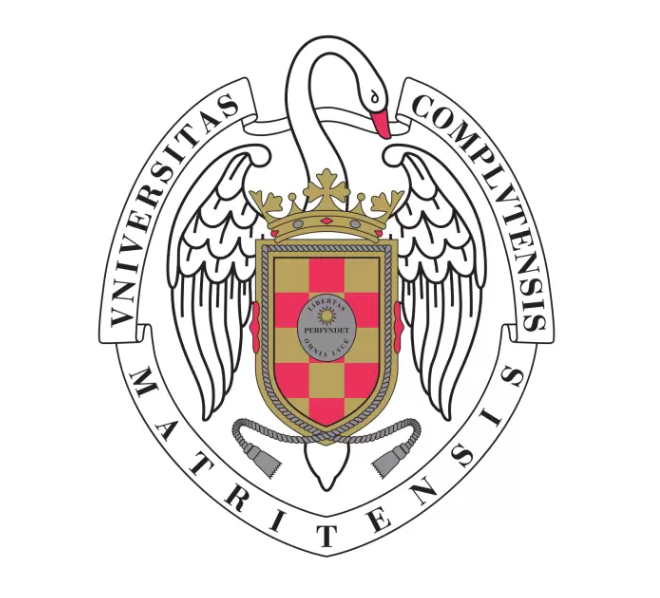
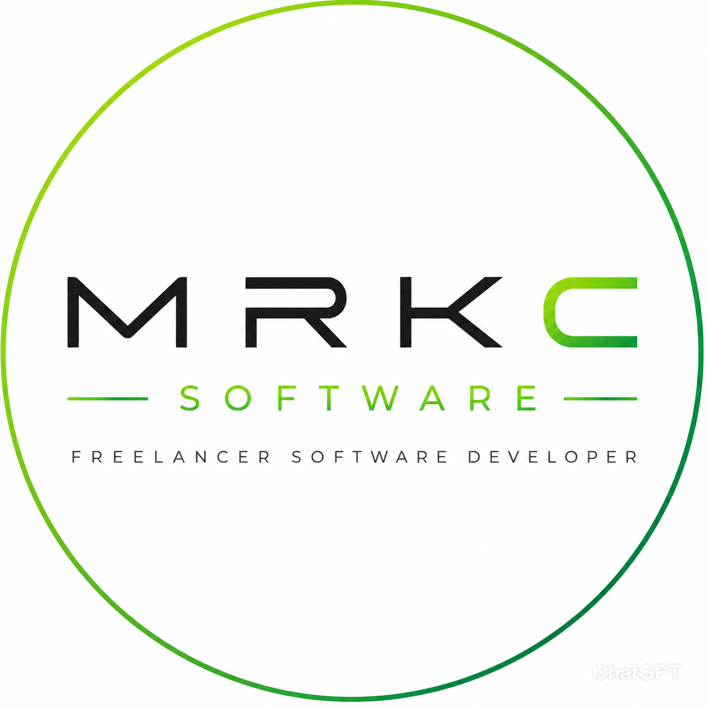
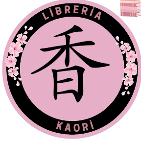

Hello, I'm
Marcos Connolly
Backend Developer & Automation Engineer
About Me
Passionate software developer focused on backend, automation and scalable web solutions.
My Journey
From mentorship and mission analysis to freelance software delivery, this timeline shares the milestones that shaped my learning, skills, and career path.

Durante mi tiempo en la universidad, tuve la oportunidad de formar parte del programa de mentores de mi universidad, donde ayudé a estudiantes de nuevo ingreso en situaciones especiales. Mi labor consistió en brindar orientación, apoyo y asesoramiento a los estudiantes, ayudándolos a familiarizarse con la universidad, facultad y la viviencia en madrid.
Fue una experiencia verdaderamente gratificante que me permitió desarrollar habilidades de comunicación, organizacion grupal y liderazgo, mientras apoyaba a otros en su proceso de adaptación y crecimiento académico.
Mis primeras practicas en el mundo laboral fueron en Deimos Space, donde tuve la
oportunidad de adentrarme en un entorno profesional y trabajar junto a un equipo
de expertos en el campo de la ingeniería aeroespacial.
Durante mi tiempo allí, participé en proyectos apasionantes y adquirí valiosa
experiencia en el trabajo de equipo, cumplimiento de plazos y el desarrollo de software.
Con el apoyo de mis compañeros, estudié y aprendí mucho acerca de la industria aeroespacial,
me adeque a los conocimientos con los que trabajaban e imparte mis propios acerca del desarollo software y optimizacion.
Aprendi a aplicar mis conocimientos académicos para contribuir
al mejoramiento de los procesos y resultados de los proyectos donde participé.
Tras mi primera experiencia en Deimos Space, me ofrecieron la oportunidad
de volver a trabajar con ellos en varios proyectos más.
Durante este tiempo, pude profundizar en mis habilidades técnicas y
ampliar mi conocimiento en el desarrollo de software y la gestión y
automatización de bases de datos.
Trabajé en proyectos con mayor complejidad y libertad, lo que me permitio
familiarizarme con la capacidad de tomar decisiones y resolver problemas
de manera autónoma.
En todo momento aprendí el valor de mi tiempo y el tiempo de los demás, y
la importancia de la comunicación efectiva y cuidar el ambiente en equipo
para lograr resultados exitosos.

Tras aprender a gestionar proyectos completos de forma autónoma,
los requerimientos de tiempo y labor, y las relaciones que forje
dentro y fuera de la universidad.
Pude emprender en el desarollo applicaciones y servicios en pequeños.
Trabajé en una variedad de equipos diversos, donde pude aplicar mis
conocimientos y habilidades en el desarrollo de software y la gestión de proyectos.
De esta experiencia existen multiples proyectos destacables de los
cuales indagare en la siguiente sección.

El siguiente paso por donde me condujo la vida fue la inaguracion de la libreria Kaori.
Mi pareja y yo, decidimos emprender en el mundo del comercio y la cultura, y los anteriores
dueños se jubilaron y nos traspasaron su negocio que anteriormente llamada Libreria Papeleria Quevedo.
Tras el traspaso de la libreria, nos encontramos con el reto de modernizar y digitalizar la libreria,
de arreglarla y de darle un nuevo enfoque, para poder mantenerla y hacerla crecer a nuestra imagen.
Aqui aprendí a gestionar no solo un negocio, sino a comerciales, gestores, abogados, proovedores y clientes.
A luchar por mantenerlo y adaptarnos a los cambios del mercado y analizar el entorno y competencia. La gestion de
trabajadores, sus horarios y la resolucion de incidencias desde cualquier lugar.
Con mis conocimientos de desarrollo y automatización, pude implementar soluciones tecnológicas para optimizar
los procesos internos de la librería, mejorar la experiencia del cliente y aumentar las ventas online. Sea con clientes individuales
o a empresas y colegios. Desde el desarollo de una pagina web, la gestion de un cmoercio electronico que comenzo con herramientas como
odoo y que acabaron con el desarollo de un comercio electronico creado por mi.
Esta experiencia me impulso drásticamente mi crecimiento personal y profesional, errores fueron cometidos, pero aprendí de ellos y
trabajamos duro para llegar a donde estamos hoy.
Una vez que la tienda se estabilizó y se encontraba en un buen estado,
decidí volver a mis raíces y retomar mi carrera como desarrollador de software. Acepté unas practicas
en AirTouch Media, en su subdivisión dedicado a la gestion de marketplaces que enlazan a Globo, UberEats y JustEat
a los restaurantes de españa.
Aquí me dedique a la inscripción de nuevos restaurantes registrados en nuestra plataforma, el diseño de los correos
hacia clientes y la resolución de incidencias con los restaurantes y sus clientes. Resolviendo sus dudas e arreglando y detallando
errores con los registros en las bases de datos.
Tambien me dedique a la prueba de sus aplicaciones web y móviles, asegurando que funcionaran correctamente y
cumplieran con los estándares de calidad y funcionamiento.
My Projects
Projects range from backend services to automation tooling and web applications.
Contact & Blog
Interested in collaborating or learning more? Reach out for updates and blog posts.
Contact Me Directly
Phone: +34 690 22 04 51
Email: mrk.c.software@gmail.com
Email: marcosconnolly10@gmail.com